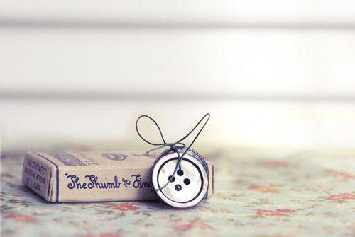

燕子去了，有再来的时候；杨柳枯了，有再青的时候；桃花谢了，有再开的时 候。但是，聪明的，你告诉我，我们的日子为什么一去不复返呢？——是有人偷了他 们罢：那是谁？又藏在何处呢？是他们自己逃走了罢——如今又到了哪里呢？
我不知道他们给了我多少日子，但我的手确乎是渐渐空虚了。在默默里算着，八千多日子已经从我手中溜去，像针尖上一滴水滴在大海里，我的日子滴在时间的流里，没有声音，也没有影子。我不禁头涔涔而泪潸潸了。
去的尽管去了，来的尽管来着；去来的中间，又怎样地匆匆呢？早上我起来的时候，小屋里射进两三方斜斜的太阳。太阳他有脚啊，轻轻悄悄地挪移了；我也茫茫然跟着旋转。于是——洗手的时候，日子从水盆里过去；吃饭的时候，日子从饭碗里过去；默默时，便从凝然的双眼前过去。我觉察他去的匆匆了，伸出手遮挽时，他又从遮挽着的手边过去，天黑时，我躺在床上，他便伶伶俐俐地从我身上跨过，从我脚边飞去了。等我睁开眼和太阳再见，这算又溜走了一日。我掩着面叹息。但是新来的日子的影儿又开始在叹息里闪过了。

在逃去如飞的日子里，在千门万户的世界里的我能做些什么呢？只有徘徊罢了，只有匆匆罢了；在八千多日的匆匆里，除徘徊外，又剩些什么呢？过去的日子如轻烟，被微风吹散了，如薄雾，被初阳蒸融了；我留着些什么痕迹呢？我何曾留着像游丝样的痕迹呢？我赤裸裸来到这世界，转眼间也将赤裸裸的回去罢？但不能平的，为什么偏要白白走这一遭啊？
你聪明的，告诉我，我们的日子为什么一去不复返呢？